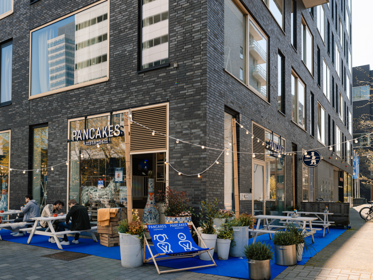
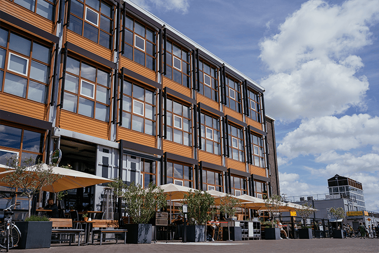
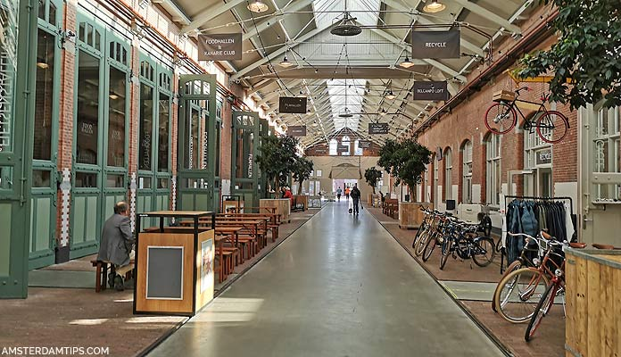

Pancakes Amsterdam

Pancakes Amsterdam is a must-visit for pancake lovers. This renowned restaurant offers a wide range of sweet and savory Dutch pancakes, making dining fun for the whole family. Kids can choose their own toppings, from fruits to chocolate sprinkles, turning meals into a personalized experience.
The restaurant features a kid-friendly atmosphere, playful décor, and family-focused service, perfect for families. Conveniently located near major attractions, it’s an ideal stop during sightseeing.
IJ-Kantine

Nestled on the Northside of the River IJ, IJ-Kantine is a delightful spot for families. It combines a sophisticated atmosphere with a child-friendly environment. The restaurant has a play corner with games and toys to keep kids engaged while parents relax.
Every weekend, IJ-Kantine hosts special kids’ entertainment, ensuring children are entertained, allowing parents to enjoy their meals at leisure.
Foodhallen

De Hallen is one of the trendiest spots in Amsterdam, perfect for families looking to enjoy a vibrant atmosphere. With a variety of dining options that cater to even the pickiest eaters, it’s an exciting lunch destination.
Foodhallen encourages kids to try something new, with diverse food choices available. It's an ideal spot for families to explore and enjoy great food together.